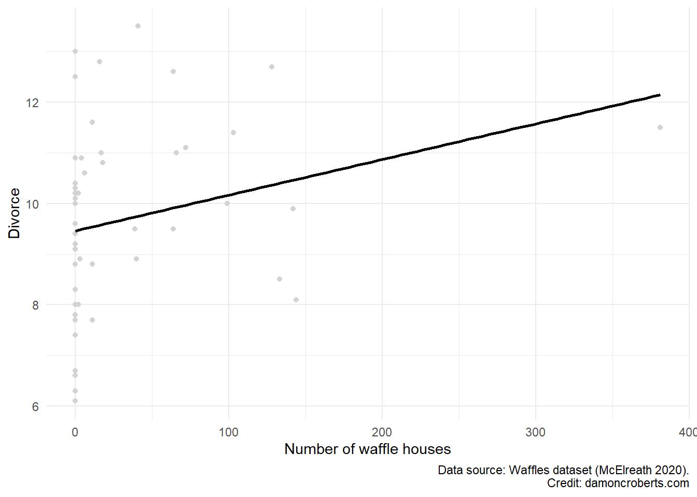
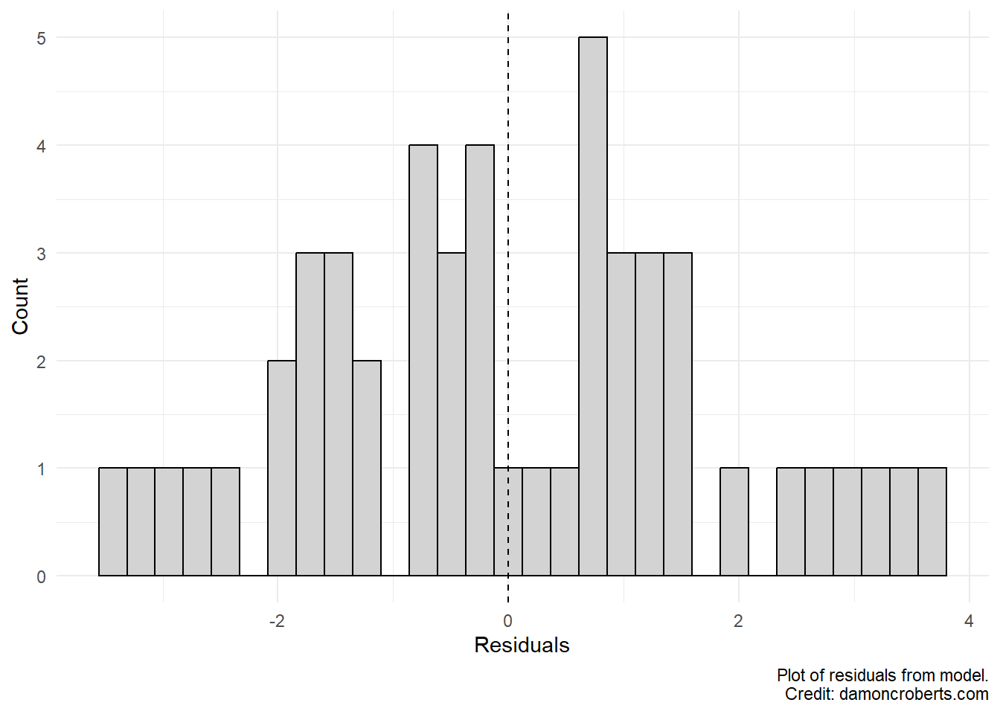

14 Bivariate regression
So far we have only visually examined patterns between two variables. These patterns give us hints about the correlation between the two variables, but have not necessarily told us anything about the structure of the relationship between the two variables. Additionally, as we discussed, it can sometimes be difficult to determine a pattern just from visuals alone.
Regression allows us to quantify and to impose a structure onto the relationship between the two variables we are interested in. Let’s start simple.
In the previous exercise, I used the example of hypothesizing that the sun causes an increase in temperature (visually depicted in Figure 14.1)
%%{init: {'theme':'base', 'themeVariables':{'primaryColor':'#ffffff', 'primaryBorderColor': '#000000'}}}%%
graph LR
A[Presence of Sun] --> B[Temperature]
In that exercise, I only examined patterns between the two. But did any of my analyses necessarily examine whether the presence of the sun caused an increase in temperature? No, none of the previous tools I used necessarily examined the structure of the relationship between the two variables; just whether there was a relationship that existed.
That is the primary objective of regression. We mathematically impose a structured relationship between two variables. This structure implies that one variable, the independent variable explains or causes the other variable, the dependent variable.
How does this work? Well, it is rather complicated, but just look at a simple equation for the regression that would be built given my hypothesis in Figure 14.1.
\[ \text{Temp} = \beta * \text{Sun} + \alpha \]
What is going on in this equation?
- We are saying that the sun has some effect, quantified as \(\beta\), on the temperature. Plus there is some base value of temperature that occurs when there is no sun, \(\alpha\).
- All this equation is saying is that these things together (\(\beta * \text{Sun} + \alpha\)) explain the temperature.
How do we calculate \(\beta\) and \(\alpha\)?
Well, this is a bit complicated, but let’s go through the really general way that we do this.
Let’s go back to an example that we’ve used before: the relationship between the presence of waffle houses and rates of divorce (see Figure 15.1).
%%{init: {'theme':'base', 'themeVariables':{'primaryColor':'#ffffff', 'primaryBorderColor': '#000000'}}}%%
graph LR
A[Waffle Houses] --> B[Divorce]
I’ve already done all of my univariate statistics and am now looking at a scatterplot to try to understand the pattern between these two variables.
My hypothesis states that the Waffle Houses are causing Divorce and that the relationship isn’t the other way around (Divorce causes Waffle Houses, though this seems like it could be pretty plausible).
# Load data
waffles <- ("waffles_data.csv")
# Load packages
library(ggplot2) # for graphs
library(magrittr) # for the nifty pipe operator
library(modelsummary) # to make plots of modelwaffles %>% # grab the waffles dataset
ggplot(
data = .,
) + # make a ggplot object
geom_point( # specifically a scatterplot
aes(
x = WaffleHouses, # put waffle houses on the x-axis
y = Divorce # put Divorce on the y-axis
),
fill = "#D3D3D3", #fill the color of each dot with light grey
color = "#D3D3D3" #color the dots with light grey
) +
theme_minimal() + # add the minimal theme
labs( # adjust the labels
x = "Number of waffle houses", # change x-axis label to this
y = "Divorce", # change y-axis label to this
caption = "Data source: Waffles dataset (McElreath 2020)."
)
We can kind of see that there appears to be a positive relationship between these two variables: when the number of waffle houses in a state increases, so does the rate of divorce for that state.
But this is a bit tricky and can be harder with other data. So let’s have R apply a line of best fit that puts a straight line through the data points that best fit to the data points.
waffles %>% # grab the waffles dataset
ggplot(
data = .,
aes(
x = WaffleHouses, # put waffle houses on the x-axis
y = Divorce # put Divorce on the y-axis
)
) + # make a ggplot object
geom_point( # specifically a scatterplot
fill = "#D3D3D3", #fill the color of each dot with light grey
color = "#D3D3D3" #color the dots with light grey
) +
geom_smooth( # apply a line of best fit to the data
method = lm, # the line should be linear
color = "#000000", # make this line black
se = FALSE # do not include visual representation of uncertainty
) +
theme_minimal() + # add the minimal theme
labs( # adjust the labels
x = "Number of waffle houses", # change x-axis label to this
y = "Divorce", # change y-axis label to this
caption = "Data source: Waffles dataset (McElreath 2020)."
)
This line of best fit demonstrates that there is indeed a positive relationship between these two things. \(\alpha\) from our equation above would be the y-intercept (the value of the variable on our y-axis when the variable on our x-axis equals 0). \(\beta\) is the slope of this line. I’ll provide a table displaying the actual numbers for both \(\beta\) and \(\alpha\) in a little bit. Let me first make a point that may appear like a tangent at first.
Now, one thing that you may be asking yourself is how do we know this is the line of *best* fit? What determines that this line is the best one?
We can see that this particular line doesn’t go through every single point. This distance between the predicted values on the line and the observed values in our data are called residuals. These residuals provide information to us about how uncertain we are that this particular line fits these data well. If we have a line that perfectly fits the data, then the residuals should equal 0. The line drawn by R in Figure 14.4 was determined to be the one that made these residuals the smallest of all possible lines we could imagine drawing between these points.
So, if this is the best linear line to fit the data, why are the residuals not zero here? We have a couple of constraints.
- We have to draw a straight line. We defined that the method to fit the data is linear. So we can only choose between the different straight lines that we could generate for the data.
- Even if we went with non-straight lines (referred to as
non-parametric), have we perfectly explained divorce and what causes it by only examining the number of waffle houses? No, of course not.
So what does this tell us? That residuals reflect uncertainty about the line that we plot but that R can’t choose the theoretical best line, but rather the best line based on the constraints we put on R. BTW, there aren’t any clear ways to determine the theoretical best line. If there were, then we could just do away with scientists and just have our computers do everything for us. Instead, the constraints that we place on this line of best fit have to be informed by our expertise and what seem most appropriate.
Let me go back to how to provide precise numbers for \(\alpha\) and \(\beta\).
Let’s run some R code to fit a regression model to the data ourselves rather than have ggplot2 do it for us.
# fit regression model to data
lm( # fit a linear model to the data
data = waffles, # going to use the waffles data
formula = Divorce ~ WaffleHouses # the formula says that I want to examine whether Divorces are caused (~) by WaffleHouses
)
Call:
lm(formula = Divorce ~ WaffleHouses, data = waffles)
Coefficients:
(Intercept) WaffleHouses
9.460231 0.007043 The output tells us that \(\alpha = 9.46\) and \(\beta = 0.007\). What does this mean? Recall that \(\alpha\) reflects the parts of the data that are not explained by our independent variable. So, when there are 0 waffle houses in a state, then we should expect that the rate of divorce should be approximately 9.46%. Now, for every waffle house in a state, it increases the divorce rate by 0.007%. Again, we got that number from our \(\beta\).
What does this tell us about what \(\alpha\) and \(\beta\) mean?
\(\beta\): reflects the parts of the data in the Divorce rate variable that vary systematically because of the number of waffle houses.
\(\alpha\): is a catch-all that reflects the parts of the data in the Divorce rate variable that vary for reasons other than what is covered in what we defined with the systematic part of the model.
One thing you might be asking is: “wait, what happened to the discussion of residuals? Where are those in the output?”
Don’t worry, all of that information is still there. Let’s generate a nifty table to give us all of this important information.
# run the model again, but store it in an object called model
model <- lm( # fit a linear model to the data
data = waffles, # going to use the waffles data
formula = Divorce ~ WaffleHouses # the formula says that I want to examine whether Divorces are caused (~) by WaffleHouses
)
modelsummary( # make a table summarizing the model output
model, # take the stored model results and make a table with it
notes = c(
"Data source: Waffles dataset (McElreath 2020).",
"Coefficient estimates from OLS.",
"Standard errors in parenthases."), # add a note to tell people how this model was created and with what data.
output = "my_first_regression.docx" # store the results of this in a word doc so that I can easily put it in my reports!
)?(caption)
| (1) | |
|---|---|
| (Intercept) | 9.460 |
| (0.281) | |
| WaffleHouses | 0.007 |
| (0.004) | |
| Num.Obs. | 50 |
| R2 | 0.065 |
| R2 Adj. | 0.045 |
| AIC | 203.5 |
| BIC | 209.2 |
| Log.Lik. | −98.732 |
| RMSE | 1.74 |
| Data source: Waffles dataset (McElreath 2020). | |
| Coefficient estimates from OLS. | |
| Standard errors in parenthases. |
We still see that we’ve got information on our \(\alpha\), that it equals 9.460, and our \(\beta\), that it equals 0.007. But what are those numbers in the parentheses underneath the what we sometimes call point estimates for \(\alpha \text{and} \beta\)? They are called standard errors.
The standard error reflects a calculation of the standard deviation in our residuals. Recall back to what the standard deviation tells us. It tells us how much variation there is in a particular variable. So the standard error tells us how all over the place our residuals are. If we think back to what the residual represents, we would want a smaller standard error, right? It means that even if there are residuals that do not equal 0, but if we have a small standard error, then our model is incorrect in a similar way.
Let’s visualize this. Let me take the residuals from the model we just created and let me make a histogram of it.
Since I stored the results of the model into an object, I can treat the model object as kind of like a dataset. So I can make a histogram of my residuals like I would when doing other forms of univariate descriptive analyses.
waffles %>% # take the waffles data
ggplot() + # make a plot with it
geom_histogram( # specifically a histogram
aes(x = model$residuals), # and put the residuals from the model on the x-axis
color = "#000000", # make the lines between the bars black
fill = "#D3D3D3" # fill the bars with a light grey color
) +
geom_vline( # add a vertical line
xintercept = mean(model$residuals), # the vertical line should be the mean value of my residuals
color = "#000000", # the color of the line should be black
linetype = 2 # and I want the line to be dotted
) +
theme_minimal() + # apply the minimal theme to it
labs( # adjust some of the labels
x = "Residuals", # make x-axis label this
y = "Count", # make y-axis label this
caption = "Plot of residuals from model."
)
What can we see here? Well, first we see that most of the residuals tend to be centered around 0. That is a good sign. That means that for a large number of our observed values that we predicted them perfectly with the fitted model that we defined with the lm() function! We also can see that the largest residuals tend to be close to 4 and -3. This means that we have some predicted values coming from that line that are 4 above or 3 percentage points below the actual value of divorce rate than what we’d predict. That’s not crazy high, but not super small either. Overall, we see that for the most part, when our model is “off”, it isn’t “off” by a massive amount. This fits with the reported standard error in our table; the standard deviation for our residuals. When we are off, we aren’t off all over the place but are off in ways that are kind of clumped together. We can discuss what all that means later.
So what do the standard errors mean for our results? Well, we see from our coefficients (point estimates) in the table that the number of waffle houses in a state has a positive effect on divorce rates for that state. The standard error, gives us a sense of how wrong our model is about that estimation right? So the standard error gives us a sense of how uncertain we are that our estimation of a positive relationship. We can be relatively confident, given how small our standard errors are, that there is actually a positive relationship between these two variables.
We’ll go into more detail about some of these things and the other parts spit out in the table later.
14.1 Some final notes:
- \(\beta\): the slope that describes the relationship between your
independent(predictor/explanatory/x) variable and yourdependent(outcome/y) variable.- Should be interpreted as: For each unit increase in my independent variable, there is a \(\beta\) unit increase in my dependent variable.
- \(\alpha\): the left-over stuff from the model that isn’t explained by your \(\beta\) coefficients. Since we can’t parse out all of that different “stuff”, it all gets lumped together and is assumed to be what your dependent variable is equal to when your independent variable is equal to 0. It is your y-intercept.
- Should be interpreted as: When my independent variable is 0, my dependent variable is equal to \(\alpha\).
- residuals: the difference between the actual,
observed, values in my dataset and thepredictedvalues that my line of best fit generates.- If I go across different values of my independent variable and look at what the values are for my dependent variable based on my dataset (observed) and what my line would predict, then subtract the observed from the predicted, that’d give me a residual.
- standard error: what a single standard deviation of my residuals are. It tells me how spread out my residuals are from the average residual in my dataset. The smaller my standard deviation, the more compact my residuals are. This is useful for determining the uncertainty of my model, and thus, whether I think that the \(\beta\) coefficient that I calculated is actually different from 0 or not.
- \(R^2\): the percentage of variance that the model (as a whole) explains in your dependent variable. Basically it gives us a sense of how much we are explaining the dependent variable. The higher the \(R^2\) value, the better our model is at explaining why our dependent variable is the way that it is.
- For a full working example R script, go to this page.